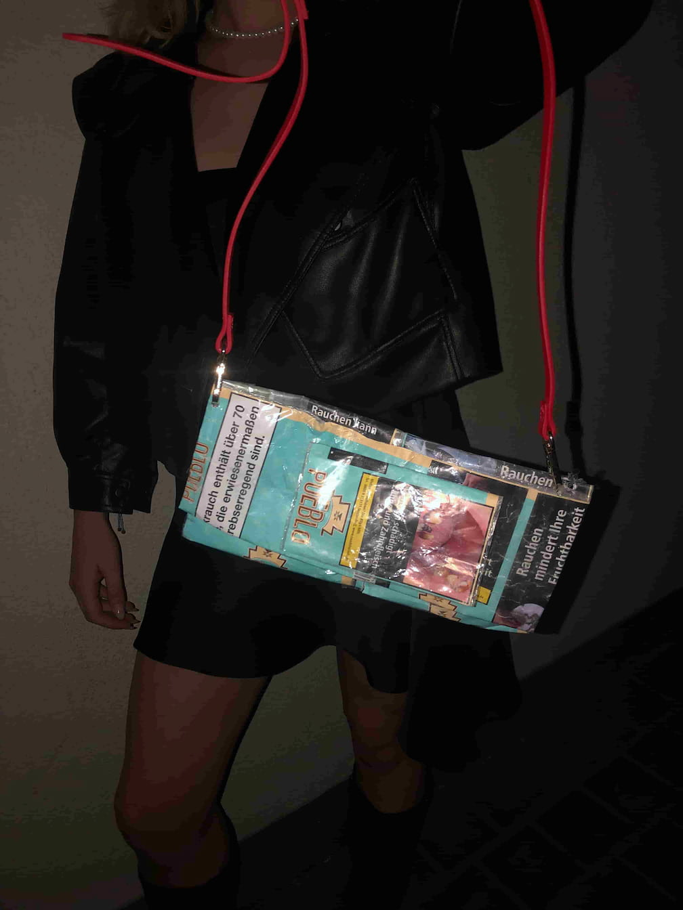
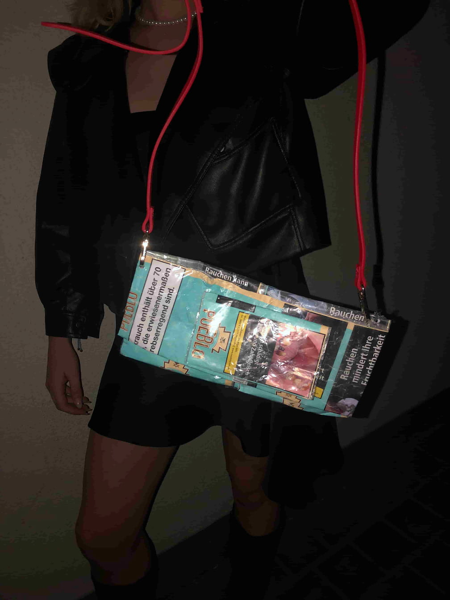

In my second semester of my industrial design studies, I fabricated a tobacco pouch for a 'Do it Yourself' project. The assignment required us to repurpose unused materials and create a DIY project. As part of this assignment, I generated a step-by-step DIY guide. You can view this guide by clicking on the images.